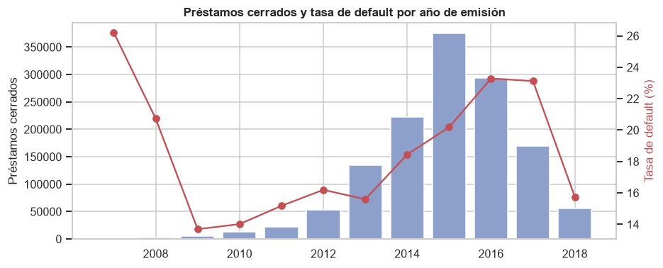

1. Carga inicial y visión general#
Este capítulo corresponde a la sección 9.10.4.1.1 del enunciado. Se lee el archivo
accepted_2007_to_2018Q4.csv.gz completo (Kaggle, wordsforthewise/lending-club), se verifica
la lectura, se describe su estructura y se define la población de préstamos sobre la que se
construye la variable objetivo default. La lectura se hace con pandas y, para comparar tiempos,
también con Spark.
import os
import sys
import time
import warnings
sys.path.insert(0, "../src")
warnings.filterwarnings("ignore")
import matplotlib.pyplot as plt
import numpy as np
import pandas as pd
import utils as u
u.estilo()
pd.set_option("display.max_columns", 40, "display.width", 180, "display.max_colwidth", 40)
print("Equipo utilizado:")
for k, v in u.hardware().items():
print(f" {k}: {v}")
Equipo utilizado:
sistema: Darwin 27.0.0
python: 3.11.16
nucleos_logicos: 10
cpu: Apple M5
nucleos_rendimiento: 4
nucleos_eficiencia: 6
ram_gb: 24.0
1.1 Lectura del CSV completo con pandas#
Se lee el archivo comprimido completo, sin muestreo ni nrows.
t0 = time.time()
crudo = pd.read_csv(u.CSV_CRUDO, low_memory=False)
t_pandas = time.time() - t0
print(f"Tamaño del archivo comprimido: {u.CSV_CRUDO.stat().st_size / 2**20:.0f} MB")
print(f"Tiempo de lectura con pandas: {t_pandas:.1f} s")
print(f"Dimensión del archivo: {crudo.shape[0]:,} filas x {crudo.shape[1]} columnas")
print(f"Memoria en pandas: {crudo.memory_usage(deep=True).sum() / 2**30:.2f} GB")
Tamaño del archivo comprimido: 374 MB
Tiempo de lectura con pandas: 26.9 s
Dimensión del archivo: 2,260,701 filas x 151 columnas
Memoria en pandas: 6.26 GB
1.2 Primeras y últimas filas#
crudo.head()
| id | member_id | loan_amnt | funded_amnt | funded_amnt_inv | term | int_rate | installment | grade | sub_grade | emp_title | emp_length | home_ownership | annual_inc | verification_status | issue_d | loan_status | pymnt_plan | url | desc | ... | hardship_status | deferral_term | hardship_amount | hardship_start_date | hardship_end_date | payment_plan_start_date | hardship_length | hardship_dpd | hardship_loan_status | orig_projected_additional_accrued_interest | hardship_payoff_balance_amount | hardship_last_payment_amount | disbursement_method | debt_settlement_flag | debt_settlement_flag_date | settlement_status | settlement_date | settlement_amount | settlement_percentage | settlement_term | |
|---|---|---|---|---|---|---|---|---|---|---|---|---|---|---|---|---|---|---|---|---|---|---|---|---|---|---|---|---|---|---|---|---|---|---|---|---|---|---|---|---|---|
| 0 | 68407277 | NaN | 3600.0 | 3600.0 | 3600.0 | 36 months | 13.99 | 123.03 | C | C4 | leadman | 10+ years | MORTGAGE | 55000.0 | Not Verified | Dec-2015 | Fully Paid | n | https://lendingclub.com/browse/loanD... | NaN | ... | NaN | NaN | NaN | NaN | NaN | NaN | NaN | NaN | NaN | NaN | NaN | NaN | Cash | N | NaN | NaN | NaN | NaN | NaN | NaN |
| 1 | 68355089 | NaN | 24700.0 | 24700.0 | 24700.0 | 36 months | 11.99 | 820.28 | C | C1 | Engineer | 10+ years | MORTGAGE | 65000.0 | Not Verified | Dec-2015 | Fully Paid | n | https://lendingclub.com/browse/loanD... | NaN | ... | NaN | NaN | NaN | NaN | NaN | NaN | NaN | NaN | NaN | NaN | NaN | NaN | Cash | N | NaN | NaN | NaN | NaN | NaN | NaN |
| 2 | 68341763 | NaN | 20000.0 | 20000.0 | 20000.0 | 60 months | 10.78 | 432.66 | B | B4 | truck driver | 10+ years | MORTGAGE | 63000.0 | Not Verified | Dec-2015 | Fully Paid | n | https://lendingclub.com/browse/loanD... | NaN | ... | NaN | NaN | NaN | NaN | NaN | NaN | NaN | NaN | NaN | NaN | NaN | NaN | Cash | N | NaN | NaN | NaN | NaN | NaN | NaN |
| 3 | 66310712 | NaN | 35000.0 | 35000.0 | 35000.0 | 60 months | 14.85 | 829.90 | C | C5 | Information Systems Officer | 10+ years | MORTGAGE | 110000.0 | Source Verified | Dec-2015 | Current | n | https://lendingclub.com/browse/loanD... | NaN | ... | NaN | NaN | NaN | NaN | NaN | NaN | NaN | NaN | NaN | NaN | NaN | NaN | Cash | N | NaN | NaN | NaN | NaN | NaN | NaN |
| 4 | 68476807 | NaN | 10400.0 | 10400.0 | 10400.0 | 60 months | 22.45 | 289.91 | F | F1 | Contract Specialist | 3 years | MORTGAGE | 104433.0 | Source Verified | Dec-2015 | Fully Paid | n | https://lendingclub.com/browse/loanD... | NaN | ... | NaN | NaN | NaN | NaN | NaN | NaN | NaN | NaN | NaN | NaN | NaN | NaN | Cash | N | NaN | NaN | NaN | NaN | NaN | NaN |
5 rows × 151 columns
crudo.tail()
| id | member_id | loan_amnt | funded_amnt | funded_amnt_inv | term | int_rate | installment | grade | sub_grade | emp_title | emp_length | home_ownership | annual_inc | verification_status | issue_d | loan_status | pymnt_plan | url | desc | ... | hardship_status | deferral_term | hardship_amount | hardship_start_date | hardship_end_date | payment_plan_start_date | hardship_length | hardship_dpd | hardship_loan_status | orig_projected_additional_accrued_interest | hardship_payoff_balance_amount | hardship_last_payment_amount | disbursement_method | debt_settlement_flag | debt_settlement_flag_date | settlement_status | settlement_date | settlement_amount | settlement_percentage | settlement_term | |
|---|---|---|---|---|---|---|---|---|---|---|---|---|---|---|---|---|---|---|---|---|---|---|---|---|---|---|---|---|---|---|---|---|---|---|---|---|---|---|---|---|---|
| 2260696 | 88985880 | NaN | 40000.0 | 40000.0 | 40000.0 | 60 months | 10.49 | 859.56 | B | B3 | Vice President | 9 years | MORTGAGE | 227000.0 | Verified | Oct-2016 | Current | n | https://lendingclub.com/browse/loanD... | NaN | ... | NaN | NaN | NaN | NaN | NaN | NaN | NaN | NaN | NaN | NaN | NaN | NaN | Cash | N | NaN | NaN | NaN | NaN | NaN | NaN |
| 2260697 | 88224441 | NaN | 24000.0 | 24000.0 | 24000.0 | 60 months | 14.49 | 564.56 | C | C4 | Program Manager | 6 years | RENT | 110000.0 | Not Verified | Oct-2016 | Charged Off | n | https://lendingclub.com/browse/loanD... | NaN | ... | NaN | NaN | NaN | NaN | NaN | NaN | NaN | NaN | NaN | NaN | NaN | NaN | Cash | Y | Mar-2019 | ACTIVE | Mar-2019 | 10000.0 | 44.82 | 1.0 |
| 2260698 | 88215728 | NaN | 14000.0 | 14000.0 | 14000.0 | 60 months | 14.49 | 329.33 | C | C4 | Customer Service Technician | 10+ years | MORTGAGE | 95000.0 | Verified | Oct-2016 | Current | n | https://lendingclub.com/browse/loanD... | NaN | ... | NaN | NaN | NaN | NaN | NaN | NaN | NaN | NaN | NaN | NaN | NaN | NaN | Cash | N | NaN | NaN | NaN | NaN | NaN | NaN |
| 2260699 | Total amount funded in policy code 1... | NaN | NaN | NaN | NaN | NaN | NaN | NaN | NaN | NaN | NaN | NaN | NaN | NaN | NaN | NaN | NaN | NaN | NaN | NaN | ... | NaN | NaN | NaN | NaN | NaN | NaN | NaN | NaN | NaN | NaN | NaN | NaN | NaN | NaN | NaN | NaN | NaN | NaN | NaN | NaN |
| 2260700 | Total amount funded in policy code 2... | NaN | NaN | NaN | NaN | NaN | NaN | NaN | NaN | NaN | NaN | NaN | NaN | NaN | NaN | NaN | NaN | NaN | NaN | NaN | ... | NaN | NaN | NaN | NaN | NaN | NaN | NaN | NaN | NaN | NaN | NaN | NaN | NaN | NaN | NaN | NaN | NaN | NaN | NaN | NaN |
5 rows × 151 columns
Las primeras filas se leen correctamente. Las dos últimas no son préstamos: son líneas de
totales que Lending Club añadió al final del archivo («Total amount funded in policy code 1/2»),
con todas las demás columnas vacías. A ellas se suman otras filas con id no numérico dentro del
archivo. Se identifican por tener loan_status vacío.
id_num = pd.to_numeric(crudo["id"], errors="coerce")
print("Filas con id no numérico:", id_num.isna().sum())
print("Filas con loan_status vacío:", crudo["loan_status"].isna().sum())
print("Coinciden:", (id_num.isna() == crudo["loan_status"].isna()).all())
Filas con id no numérico: 33
Filas con loan_status vacío: 33
Coinciden: True
1.3 Estado del préstamo y definición de la población#
La variable objetivo se construye a partir de loan_status. El enunciado fija
0 = Fully Paid y 1 = Charged Off.
estados = crudo["loan_status"].value_counts(dropna=False).rename("n").to_frame()
estados["%"] = (100 * estados["n"] / len(crudo)).round(2)
estados
| n | % | |
|---|---|---|
| loan_status | ||
| Fully Paid | 1076751 | 47.63 |
| Current | 878317 | 38.85 |
| Charged Off | 268559 | 11.88 |
| Late (31-120 days) | 21467 | 0.95 |
| In Grace Period | 8436 | 0.37 |
| Late (16-30 days) | 4349 | 0.19 |
| Does not meet the credit policy. Status:Fully Paid | 1988 | 0.09 |
| Does not meet the credit policy. Status:Charged Off | 761 | 0.03 |
| Default | 40 | 0.00 |
| NaN | 33 | 0.00 |
Solo los préstamos cerrados tienen un desenlace observado. Los estados Current, In Grace
Period, Late y Default corresponden a préstamos que seguían vigentes en la fecha de
extracción de los datos (primer trimestre de 2019, según las fechas más recientes de
last_credit_pull_d; 2018Q4 es el último trimestre de emisión incluido):
asignarles 0, como haría literalmente 1 if x == "Charged Off" else 0, los contaría como pagados
sin saber si lo serán. Por eso la población de estudio son los préstamos con desenlace final:
Estado original |
|
|---|---|
Fully Paid |
0 |
Does not meet the credit policy. Status:Fully Paid |
0 |
Charged Off |
1 |
Does not meet the credit policy. Status:Charged Off |
1 |
Las dos categorías Does not meet the credit policy (2.749 préstamos) son préstamos cerrados con el mismo desenlace y se conservan. Esta definición no es un muestreo: se usan todas las filas con desenlace conocido, sin submuestrear ninguna clase.
mapa = {"Fully Paid": 0, "Does not meet the credit policy. Status:Fully Paid": 0,
"Charged Off": 1, "Does not meet the credit policy. Status:Charged Off": 1}
df = crudo[crudo["loan_status"].isin(mapa)].copy()
df["default"] = df["loan_status"].map(mapa).astype("int8")
df["id"] = df["id"].astype("int64")
del crudo
print(f"Préstamos cerrados: {len(df):,} filas x {df.shape[1]} columnas")
print("id único:", df["id"].is_unique)
Préstamos cerrados: 1,348,059 filas x 152 columnas
id único: True
1.4 Tipos de datos y valores nulos: info()#
df.info(verbose=True, show_counts=True)
<class 'pandas.core.frame.DataFrame'>
Index: 1348059 entries, 0 to 2260697
Data columns (total 152 columns):
# Column Non-Null Count Dtype
--- ------ -------------- -----
0 id 1348059 non-null int64
1 member_id 0 non-null float64
2 loan_amnt 1348059 non-null float64
3 funded_amnt 1348059 non-null float64
4 funded_amnt_inv 1348059 non-null float64
5 term 1348059 non-null object
6 int_rate 1348059 non-null float64
7 installment 1348059 non-null float64
8 grade 1348059 non-null object
9 sub_grade 1348059 non-null object
10 emp_title 1262115 non-null object
11 emp_length 1269514 non-null object
12 home_ownership 1348059 non-null object
13 annual_inc 1348055 non-null float64
14 verification_status 1348059 non-null object
15 issue_d 1348059 non-null object
16 loan_status 1348059 non-null object
17 pymnt_plan 1348059 non-null object
18 url 1348059 non-null object
19 desc 125953 non-null object
20 purpose 1348059 non-null object
21 title 1331397 non-null object
22 zip_code 1348058 non-null object
23 addr_state 1348059 non-null object
24 dti 1347685 non-null float64
25 delinq_2yrs 1348030 non-null float64
26 earliest_cr_line 1348030 non-null object
27 fico_range_low 1348059 non-null float64
28 fico_range_high 1348059 non-null float64
29 inq_last_6mths 1348029 non-null float64
30 mths_since_last_delinq 668117 non-null float64
31 mths_since_last_record 229415 non-null float64
32 open_acc 1348030 non-null float64
33 pub_rec 1348030 non-null float64
34 revol_bal 1348059 non-null float64
35 revol_util 1347162 non-null float64
36 total_acc 1348030 non-null float64
37 initial_list_status 1348059 non-null object
38 out_prncp 1348059 non-null float64
39 out_prncp_inv 1348059 non-null float64
40 total_pymnt 1348059 non-null float64
41 total_pymnt_inv 1348059 non-null float64
42 total_rec_prncp 1348059 non-null float64
43 total_rec_int 1348059 non-null float64
44 total_rec_late_fee 1348059 non-null float64
45 recoveries 1348059 non-null float64
46 collection_recovery_fee 1348059 non-null float64
47 last_pymnt_d 1345734 non-null object
48 last_pymnt_amnt 1348059 non-null float64
49 next_pymnt_d 2749 non-null object
50 last_credit_pull_d 1348002 non-null object
51 last_fico_range_high 1348059 non-null float64
52 last_fico_range_low 1348059 non-null float64
53 collections_12_mths_ex_med 1347914 non-null float64
54 mths_since_last_major_derog 353750 non-null float64
55 policy_code 1348059 non-null float64
56 application_type 1348059 non-null object
57 annual_inc_joint 25800 non-null float64
58 dti_joint 25797 non-null float64
59 verification_status_joint 25595 non-null object
60 acc_now_delinq 1348030 non-null float64
61 tot_coll_amt 1277783 non-null float64
62 tot_cur_bal 1277783 non-null float64
63 open_acc_6m 537597 non-null float64
64 open_act_il 537598 non-null float64
65 open_il_12m 537598 non-null float64
66 open_il_24m 537598 non-null float64
67 mths_since_rcnt_il 523382 non-null float64
68 total_bal_il 537598 non-null float64
69 il_util 465016 non-null float64
70 open_rv_12m 537598 non-null float64
71 open_rv_24m 537598 non-null float64
72 max_bal_bc 537598 non-null float64
73 all_util 537545 non-null float64
74 total_rev_hi_lim 1277783 non-null float64
75 inq_fi 537598 non-null float64
76 total_cu_tl 537597 non-null float64
77 inq_last_12m 537597 non-null float64
78 acc_open_past_24mths 1298029 non-null float64
79 avg_cur_bal 1277761 non-null float64
80 bc_open_to_buy 1284167 non-null float64
81 bc_util 1283398 non-null float64
82 chargeoff_within_12_mths 1347914 non-null float64
83 delinq_amnt 1348030 non-null float64
84 mo_sin_old_il_acct 1239735 non-null float64
85 mo_sin_old_rev_tl_op 1277782 non-null float64
86 mo_sin_rcnt_rev_tl_op 1277782 non-null float64
87 mo_sin_rcnt_tl 1277783 non-null float64
88 mort_acc 1298029 non-null float64
89 mths_since_recent_bc 1285089 non-null float64
90 mths_since_recent_bc_dlq 319020 non-null float64
91 mths_since_recent_inq 1171239 non-null float64
92 mths_since_recent_revol_delinq 449962 non-null float64
93 num_accts_ever_120_pd 1277783 non-null float64
94 num_actv_bc_tl 1277783 non-null float64
95 num_actv_rev_tl 1277783 non-null float64
96 num_bc_sats 1289469 non-null float64
97 num_bc_tl 1277783 non-null float64
98 num_il_tl 1277783 non-null float64
99 num_op_rev_tl 1277783 non-null float64
100 num_rev_accts 1277782 non-null float64
101 num_rev_tl_bal_gt_0 1277783 non-null float64
102 num_sats 1289469 non-null float64
103 num_tl_120dpd_2m 1227909 non-null float64
104 num_tl_30dpd 1277783 non-null float64
105 num_tl_90g_dpd_24m 1277783 non-null float64
106 num_tl_op_past_12m 1277783 non-null float64
107 pct_tl_nvr_dlq 1277629 non-null float64
108 percent_bc_gt_75 1283755 non-null float64
109 pub_rec_bankruptcies 1346694 non-null float64
110 tax_liens 1347954 non-null float64
111 tot_hi_cred_lim 1277783 non-null float64
112 total_bal_ex_mort 1298029 non-null float64
113 total_bc_limit 1298029 non-null float64
114 total_il_high_credit_limit 1277783 non-null float64
115 revol_bal_joint 18629 non-null float64
116 sec_app_fico_range_low 18630 non-null float64
117 sec_app_fico_range_high 18630 non-null float64
118 sec_app_earliest_cr_line 18630 non-null object
119 sec_app_inq_last_6mths 18630 non-null float64
120 sec_app_mort_acc 18630 non-null float64
121 sec_app_open_acc 18630 non-null float64
122 sec_app_revol_util 18302 non-null float64
123 sec_app_open_act_il 18630 non-null float64
124 sec_app_num_rev_accts 18630 non-null float64
125 sec_app_chargeoff_within_12_mths 18630 non-null float64
126 sec_app_collections_12_mths_ex_med 18630 non-null float64
127 sec_app_mths_since_last_major_derog 6645 non-null float64
128 hardship_flag 1348059 non-null object
129 hardship_type 5754 non-null object
130 hardship_reason 5754 non-null object
131 hardship_status 5754 non-null object
132 deferral_term 5754 non-null float64
133 hardship_amount 5754 non-null float64
134 hardship_start_date 5754 non-null object
135 hardship_end_date 5754 non-null object
136 payment_plan_start_date 5754 non-null object
137 hardship_length 5754 non-null float64
138 hardship_dpd 5754 non-null float64
139 hardship_loan_status 5754 non-null object
140 orig_projected_additional_accrued_interest 3759 non-null float64
141 hardship_payoff_balance_amount 5754 non-null float64
142 hardship_last_payment_amount 5754 non-null float64
143 disbursement_method 1348059 non-null object
144 debt_settlement_flag 1348059 non-null object
145 debt_settlement_flag_date 33286 non-null object
146 settlement_status 33286 non-null object
147 settlement_date 33286 non-null object
148 settlement_amount 33286 non-null float64
149 settlement_percentage 33286 non-null float64
150 settlement_term 33286 non-null float64
151 default 1348059 non-null int8
dtypes: float64(113), int64(1), int8(1), object(37)
memory usage: 1.5+ GB
De las 152 columnas (151 originales y default), 115 son numéricas (incluidas id y default)
y 37 de texto. Varias
columnas de texto son en realidad numéricas u ordinales (term, emp_length), que se convierten
a número en la sección 1.6, o fechas (issue_d, earliest_cr_line), a partir de las cuales esa
sección deriva antig_credito_meses e issue_year. Hay tres grupos de columnas
que no deben entrar al modelo:
Identificadores y texto libre:
id,member_id(100 % vacío),url,desc,title,emp_title,zip_code.Información posterior a la originación (fuga de información, 40 columnas listadas abajo): montos efectivamente financiados (
funded_amnt,funded_amnt_inv), pagos recibidos (total_pymnt,total_rec_prncp,recoveries…), saldo pendiente, último y próximo pago, última consulta y FICO más recientes,pymnt_plany variables de hardship y settlement. Solo se conocen durante la vida del préstamo; un modelo que las use «predice» el default con información del propio default.Columnas de solicitudes conjuntas o de coprestatario, vacías en más del 98 % de las filas.
print(f"Columnas con posible fuga de información ({len(u.FUGA)}):")
print(", ".join(u.FUGA))
Columnas con posible fuga de información (40):
funded_amnt, funded_amnt_inv, out_prncp, out_prncp_inv, total_pymnt, total_pymnt_inv, total_rec_prncp, total_rec_int, total_rec_late_fee, recoveries, collection_recovery_fee, last_pymnt_d, last_pymnt_amnt, next_pymnt_d, last_credit_pull_d, last_fico_range_high, last_fico_range_low, pymnt_plan, debt_settlement_flag, debt_settlement_flag_date, settlement_status, settlement_date, settlement_amount, settlement_percentage, settlement_term, hardship_flag, hardship_type, hardship_reason, hardship_status, deferral_term, hardship_amount, hardship_start_date, hardship_end_date, payment_plan_start_date, hardship_length, hardship_dpd, hardship_loan_status, orig_projected_additional_accrued_interest, hardship_payoff_balance_amount, hardship_last_payment_amount
1.5 Estadísticas descriptivas: describe()#
df.describe().T.round(2)
| count | mean | std | min | 25% | 50% | 75% | max | |
|---|---|---|---|---|---|---|---|---|
| id | 1348059.0 | 56230893.72 | 38405042.67 | 54734.00 | 19726640.50 | 57673953.00 | 84505285.50 | 1.456364e+08 |
| member_id | 0.0 | NaN | NaN | NaN | NaN | NaN | NaN | NaN |
| loan_amnt | 1348059.0 | 14409.00 | 8716.09 | 500.00 | 7975.00 | 12000.00 | 20000.00 | 4.000000e+04 |
| funded_amnt | 1348059.0 | 14400.19 | 8712.20 | 500.00 | 7950.00 | 12000.00 | 20000.00 | 4.000000e+04 |
| funded_amnt_inv | 1348059.0 | 14372.53 | 8718.31 | 0.00 | 7800.00 | 12000.00 | 20000.00 | 4.000000e+04 |
| ... | ... | ... | ... | ... | ... | ... | ... | ... |
| hardship_last_payment_amount | 5754.0 | 184.69 | 196.46 | 0.01 | 39.57 | 120.97 | 267.60 | 1.407860e+03 |
| settlement_amount | 33286.0 | 5029.48 | 3684.58 | 44.21 | 2228.13 | 4174.59 | 6883.48 | 3.360100e+04 |
| settlement_percentage | 33286.0 | 47.69 | 7.31 | 0.20 | 45.00 | 45.00 | 50.00 | 5.213500e+02 |
| settlement_term | 33286.0 | 13.15 | 8.24 | 0.00 | 6.00 | 14.00 | 18.00 | 1.810000e+02 |
| default | 1348059.0 | 0.20 | 0.40 | 0.00 | 0.00 | 0.00 | 0.00 | 1.000000e+00 |
115 rows × 8 columns
La tabla completa tiene 115 filas y pandas solo muestra las primeras y las últimas. Las variables que más interesan para el modelo se resumen aparte:
df[["loan_amnt", "annual_inc", "revol_bal", "tot_cur_bal", "dti", "out_prncp"]].describe().T.round(2)
| count | mean | std | min | 25% | 50% | 75% | max | |
|---|---|---|---|---|---|---|---|---|
| loan_amnt | 1348059.0 | 14409.00 | 8716.09 | 500.0 | 7975.00 | 12000.00 | 20000.00 | 40000.0 |
| annual_inc | 1348055.0 | 76237.80 | 69922.99 | 0.0 | 45750.06 | 65000.00 | 90000.00 | 10999200.0 |
| revol_bal | 1348059.0 | 16270.87 | 22477.76 | 0.0 | 5936.00 | 11130.00 | 19758.00 | 2904836.0 |
| tot_cur_bal | 1277783.0 | 141133.75 | 157547.77 | 0.0 | 29423.00 | 80231.00 | 210715.00 | 8000078.0 |
| dti | 1347685.0 | 18.27 | 11.16 | -1.0 | 11.79 | 17.61 | 24.05 | 999.0 |
| out_prncp | 1348059.0 | 0.00 | 0.00 | 0.0 | 0.00 | 0.00 | 0.00 | 0.0 |
El resumen confirma escalas muy distintas (de proporciones a saldos de millones de dólares) y
colas largas en ingresos y saldos: la media de annual_inc (76.238 dólares) supera a su mediana
(65.000) y el máximo llega a 11 millones; lo mismo ocurre con revol_bal (máximo de 2,9 millones)
y tot_cur_bal (8 millones). dti tiene un mínimo de −1 y un máximo de 999, códigos que no son
razones deuda/ingreso válidas. out_prncp vale 0 en todos los préstamos cerrados, como es de
esperar. El capítulo 2 examina cada variable.
df.describe(include="object").T
| count | unique | top | freq | |
|---|---|---|---|---|
| term | 1348059 | 2 | 36 months | 1023181 |
| grade | 1348059 | 7 | B | 393095 |
| sub_grade | 1348059 | 35 | C1 | 85616 |
| emp_title | 1262115 | 379858 | Teacher | 21268 |
| emp_length | 1269514 | 11 | 10+ years | 442669 |
| home_ownership | 1348059 | 6 | MORTGAGE | 666835 |
| verification_status | 1348059 | 3 | Source Verified | 521563 |
| issue_d | 1348059 | 139 | Mar-2016 | 48937 |
| loan_status | 1348059 | 4 | Fully Paid | 1076751 |
| pymnt_plan | 1348059 | 1 | n | 1348059 |
| url | 1348059 | 1348059 | https://lendingclub.com/browse/loanD... | 1 |
| desc | 125953 | 124398 | 251 | |
| purpose | 1348059 | 14 | debt_consolidation | 781421 |
| title | 1331397 | 63151 | Debt consolidation | 660973 |
| zip_code | 1348058 | 945 | 945xx | 15018 |
| addr_state | 1348059 | 51 | CA | 196852 |
| earliest_cr_line | 1348030 | 739 | Aug-2001 | 9402 |
| initial_list_status | 1348059 | 2 | w | 784010 |
| last_pymnt_d | 1345734 | 136 | Aug-2018 | 39615 |
| next_pymnt_d | 2749 | 98 | Mar-2011 | 107 |
| last_credit_pull_d | 1348002 | 141 | Mar-2019 | 471440 |
| application_type | 1348059 | 2 | Individual | 1322259 |
| verification_status_joint | 25595 | 3 | Not Verified | 14872 |
| sec_app_earliest_cr_line | 18630 | 570 | Aug-2006 | 198 |
| hardship_flag | 1348059 | 1 | N | 1348059 |
| hardship_type | 5754 | 1 | INTEREST ONLY-3 MONTHS DEFERRAL | 5754 |
| hardship_reason | 5754 | 9 | NATURAL_DISASTER | 1619 |
| hardship_status | 5754 | 2 | COMPLETED | 3759 |
| hardship_start_date | 5754 | 26 | Sep-2017 | 1493 |
| hardship_end_date | 5754 | 25 | Dec-2017 | 1108 |
| payment_plan_start_date | 5754 | 25 | Oct-2017 | 1065 |
| hardship_loan_status | 5754 | 5 | Late (16-30 days) | 2596 |
| disbursement_method | 1348059 | 2 | Cash | 1341159 |
| debt_settlement_flag | 1348059 | 2 | N | 1314773 |
| debt_settlement_flag_date | 33286 | 83 | Jan-2019 | 2451 |
| settlement_status | 33286 | 3 | COMPLETE | 14505 |
| settlement_date | 33286 | 90 | Jan-2019 | 1635 |
1.6 Variables derivadas#
term: texto « 36 months» / « 60 months» a número de meses.emp_length: «< 1 year» = 0, «1 year» = 1, …, «10+ years» = 10; se conserva el faltante.antig_credito_meses: meses entre la primera línea de crédito (earliest_cr_line) y la emisión del préstamo (issue_d). Ambas fechas se conocen al originar el préstamo.issue_year: año de emisión, solo para el análisis descriptivo.
df["term"] = df["term"].str.extract(r"(\d+)")[0].astype("float64")
df["emp_length"] = u.emp_length_a_numero(df["emp_length"])
emision = pd.to_datetime(df["issue_d"], format="%b-%Y")
primera = pd.to_datetime(df["earliest_cr_line"], format="%b-%Y")
df["antig_credito_meses"] = ((emision.dt.year - primera.dt.year) * 12
+ (emision.dt.month - primera.dt.month)).astype("float64")
df["issue_year"] = emision.dt.year.astype("int16")
df[["term", "emp_length", "antig_credito_meses", "issue_year"]].describe().T.round(2)
| count | mean | std | min | 25% | 50% | 75% | max | |
|---|---|---|---|---|---|---|---|---|
| term | 1348059.0 | 41.78 | 10.26 | 36.0 | 36.0 | 36.0 | 36.0 | 60.0 |
| emp_length | 1269514.0 | 5.96 | 3.69 | 0.0 | 2.0 | 6.0 | 10.0 | 10.0 |
| antig_credito_meses | 1348030.0 | 195.01 | 90.10 | 6.0 | 134.0 | 177.0 | 240.0 | 999.0 |
| issue_year | 1348059.0 | 2014.96 | 1.66 | 2007.0 | 2014.0 | 2015.0 | 2016.0 | 2018.0 |
1.7 Préstamos por año de emisión#
El conjunto cubre préstamos emitidos entre 2007 y 2018. Como solo se conservan préstamos cerrados, las cohortes recientes están incompletas: de un préstamo emitido en 2016-2018 solo se observa el desenlace si terminó antes de la extracción de los datos (primer trimestre de 2019), es decir, si entró en default pronto o si se prepagó. La tabla lo refleja: la tasa de default sube a 23 % en las cohortes de 2016 y 2017, donde pesan los defaults tempranos, y cae a 15,8 % en 2018, donde casi solo han terminado los préstamos prepagados. Este sesgo de selección por cohorte no afecta la comparación entre modelos, que se evalúan sobre la misma población, pero sí limita la extrapolación a préstamos futuros.
cohortes = df.groupby("issue_year").agg(prestamos=("default", "size"), tasa_default=("default", "mean"))
fig, ax1 = plt.subplots(figsize=(9, 3.6))
ax1.bar(cohortes.index, cohortes["prestamos"], color="#8DA0CB")
ax1.set_ylabel("Préstamos cerrados")
ax2 = ax1.twinx()
ax2.plot(cohortes.index, 100 * cohortes["tasa_default"], color="#C44E52", marker="o")
ax2.set_ylabel("Tasa de default (%)", color="#C44E52")
ax2.grid(False)
ax1.set_title("Préstamos cerrados y tasa de default por año de emisión")
u.guardar_fig(fig, "01_cohortes")
plt.show()
cohortes.assign(tasa_default=lambda d: (100 * d["tasa_default"]).round(2)).T

| issue_year | 2007 | 2008 | 2009 | 2010 | 2011 | 2012 | 2013 | 2014 | 2015 | 2016 | 2017 | 2018 |
|---|---|---|---|---|---|---|---|---|---|---|---|---|
| prestamos | 603.0 | 2393.00 | 5281.00 | 12537.00 | 21721.00 | 53367.0 | 134804.0 | 223102.00 | 375545.00 | 293095.00 | 169300.00 | 56311.00 |
| tasa_default | 26.2 | 20.73 | 13.69 | 14.01 | 15.18 | 16.2 | 15.6 | 18.45 | 20.18 | 23.28 | 23.12 | 15.75 |
1.8 Lectura con Spark (comparación de tiempos)#
Se lee el mismo CSV con Spark, con la configuración de sesión exigida en la sección 9.10.4.5.
Todas las columnas se leen como texto (sin inferSchema, que obligaría a recorrer el archivo dos
veces); el conteo de filas fuerza la lectura completa.
import spark_utils as su
spark = su.sesion_spark()
t0 = time.time()
sdf = su.leer_csv(spark)
n_spark = sdf.count()
t_spark = time.time() - t0
print(f"Tiempo de lectura + conteo con Spark: {t_spark:.1f} s ({n_spark:,} filas)")
print(f"Tiempo de lectura con pandas: {t_pandas:.1f} s")
print("Particiones del DataFrame leído:", sdf.rdd.getNumPartitions())
Tiempo de lectura + conteo con Spark: 7.3 s (2,260,701 filas)
Tiempo de lectura con pandas: 26.9 s
Particiones del DataFrame leído: 1
Spark obtiene el mismo número de filas que pandas (2.260.701). Su tiempo es menor porque el
conteo no necesita convertir los 151 campos de cada fila en objetos de Python: el lector de CSV
de Spark solo analiza los delimitadores. pandas, en cambio, construye un DataFrame de 6,3 GB en
memoria. El archivo .gz no es divisible, así que Spark lo lee en una sola partición con un
único núcleo: en esta etapa no aprovecha el paralelismo. La ventaja de Spark aparece cuando los
datos ya están particionados y en caché (capítulo 7).
u.guardar_json({"pandas_lectura_s": t_pandas, "spark_lectura_conteo_s": t_spark,
"filas_csv": int(n_spark)}, u.RESULTADOS / "tiempos_carga.json")
spark.stop()
1.9 Almacenamiento intermedio#
Se guarda el conjunto de préstamos cerrados, con todas sus columnas, en formato Parquet para los capítulos de EDA. El modelado con Spark no usa este archivo: vuelve a leer el CSV original.
df.to_parquet(u.PRESTAMOS, index=False)
print(f"Guardado {u.PRESTAMOS.name}: {len(df):,} filas x {df.shape[1]} columnas, "
f"{u.PRESTAMOS.stat().st_size / 2**20:.0f} MB")
print(f"Tasa global de default: {100 * df['default'].mean():.2f} %")
Guardado prestamos_cerrados.parquet: 1,348,059 filas x 154 columnas, 196 MB
Tasa global de default: 19.98 %